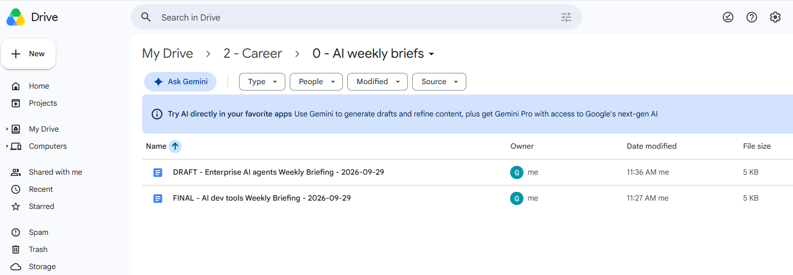
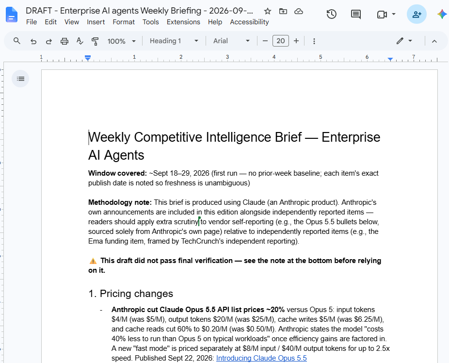
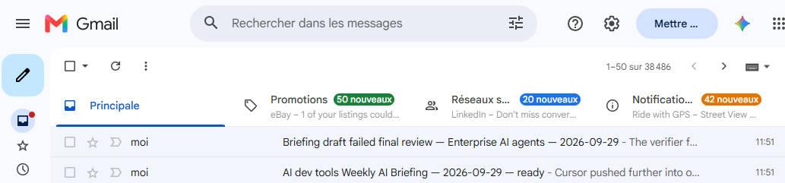

Weekly AI Competitive Briefing
Problem
I wanted to stay current on two fast-moving markets — AI dev tools and enterprise AI agents — without manually scanning news for either every week. That's a research task, which on its own just means pointing an agent at the web. The harder problem is that a briefing exists specifically to make checkable claims: "pricing changed," "a new feature shipped." A research agent generating those from a web search carries a real fabrication risk on exactly the statements the briefing is supposed to get right, and a wrong one is worse than no briefing at all if it's presented with the same confidence as a correct one.
So the brief had to do more than summarise search results. It had to report genuine week-over-week change rather than restating the status quo, back every factual claim with a source, and refuse to present itself as finished when it couldn't clear its own bar — all without me reading a draft every Wednesday morning to catch the difference.
Approach
This one runs as a Cowork scheduled task, not a local Claude Code CLI script like my other case studies — the same design discipline (bounded steps, scoped agents, a hard gate before anything ships) applied to a different part of the Claude platform, one built for unattended, recurring execution rather than an interactive session at my keyboard.
I built it as a bounded, hard-gated pipeline, run separately per industry. A draft subagent researches and writes the brief with every claim sourced; a separate critic subagent with no memory of the drafting reviews it; the draft agent gets exactly one bounded revision round, not an open-ended loop; and a second, stricter critic pass acts as a hard verification gate — it doesn't just re-read the text, it independently re-fetches all three source links to confirm they're actually live and show full article text rather than a paywall, and confirms each claim's source genuinely supports it. Only the top-level orchestrating session, never either subagent, is allowed to write to Drive or send email, and it does so strictly on that verdict. The whole pipeline is packaged as a saved Skill, invoked by a Cowork scheduled task every Wednesday at 5:58am London time, fully unattended.
Approach — step by step
- I gated the pipeline on real change, not a blind rerun. The first step is always looking up last week's brief for that industry in Google Drive, so the output reports genuine week-over-week change instead of restating whatever's still true.
- I separated drafting from verification completely. The draft subagent researches pricing changes, new product or feature announcements, and funding/M&A activity, plus a short synthesis line — and every factual claim it writes carries an inline source link, not just a general "sources" list at the end.
- I gave the critic no memory of the drafting. The critic subagent is a separate agent reviewing the draft cold, so it can't inherit the drafter's own framing of what counts as sufficiently sourced.
- I bounded the revision to exactly one round. The draft agent gets one chance to address the critic's issues — not an open-ended back-and-forth that could loop indefinitely on a task nobody's watching run.
- I made the second critic pass an actual verification gate, not another opinion. It confirms every issue from the first pass was resolved, independently re-fetches all three source links to confirm they're live and show full article text rather than a paywall, and confirms each pricing/feature claim's source actually supports it — then returns a strict PASS or FAIL, nothing softer.
- I kept write access in exactly one place. Neither subagent can touch Drive or Gmail; only the orchestrating session can, and only after the verdict. PASS creates a Doc titled "FINAL - [industry] Weekly Briefing - [date]" and sends a "ready" email. FAIL creates a Doc titled "DRAFT - ..." instead and sends an email explaining exactly why, so a shaky draft is never quietly presented as finished.
Claude Code capabilities used
- Cowork scheduled tasks — a cron-based trigger runs the whole pipeline unattended every Wednesday at 5:58am London time, with no session open on my end.
- A saved Skill — the multi-step, multi-agent pipeline is packaged as a single Skill the scheduled task invokes, rather than a one-off prompt.
- Subagents scoped by task, not just by technical restriction — the drafting and critique agents are only ever asked to produce text, so the ability to write to Drive or Gmail stays concentrated in exactly one place.
- An explicit automated verification gate — a second, stricter critic pass decides between two output states (PASS/FAIL) with independent source re-verification, instead of a single agent self-certifying its own draft.
- Native Google Drive and Gmail connectors — used only by the orchestrating session, for the Drive diff lookup, the Doc creation, and the outcome email.
- Architecture diagram generation — produced the diagram below of the actual six-step pipeline, including the PASS/FAIL branch.
![Architecture of the pipeline, run per industry every Wednesday: it looks up last week's brief in Google Drive to diff against, a draft subagent researches and writes the brief with every claim carrying an inline source link, a critic subagent with no memory of the drafting reviews it and lists issues, the draft agent gets exactly one bounded revision round, and a second stricter critic pass acts as a verification gate that re-fetches all three source links and confirms every claim is supported before returning PASS or FAIL. Only the top-level orchestrating session acts on that verdict: on PASS it creates a Doc titled FINAL and sends a ready email; on FAIL it creates a Doc titled DRAFT instead and sends an email explaining exactly why.](../images/weekly-ai-briefing-architecture.svg)
Outcome
As of this first run — Wednesday, September 29, 2026, the first edition, so there's no prior-week baseline yet — the pipeline produced both possible outcomes in the same run, one per industry:
- The AI dev tools brief passed verification: a Google Doc titled "FINAL - AI dev tools Weekly Briefing - 2026-09-29" was created, and a "ready" email was sent with the link.
- The Enterprise AI agents brief didn't pass: it was filed as "DRAFT - Enterprise AI agents Weekly Briefing - 2026-09-29" instead of FINAL, with a warning banner inside the document itself ("This draft did not pass final verification — see the note at the bottom before relying on it"), and an email explaining exactly why — not a shaky draft quietly presented as finished.
- That's real evidence the gate discriminates rather than rubber-stamping: the same run, on the same day, produced one PASS and one FAIL, correctly routed to two different document titles and two different emails.
This is the first edition, so there's no run history or pass/fail rate to report yet — I'll add that once a few more weeks have landed.
How it's defined
There's no separate GitHub repo for this one. The "source" is a saved Skill
(weekly-ai-briefing) packaging the six-step pipeline above, plus a Cowork
scheduled-task config that invokes it every Wednesday — both living in my Claude
account rather than in a code repository.


